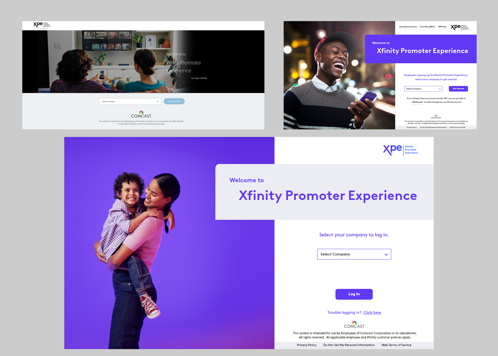
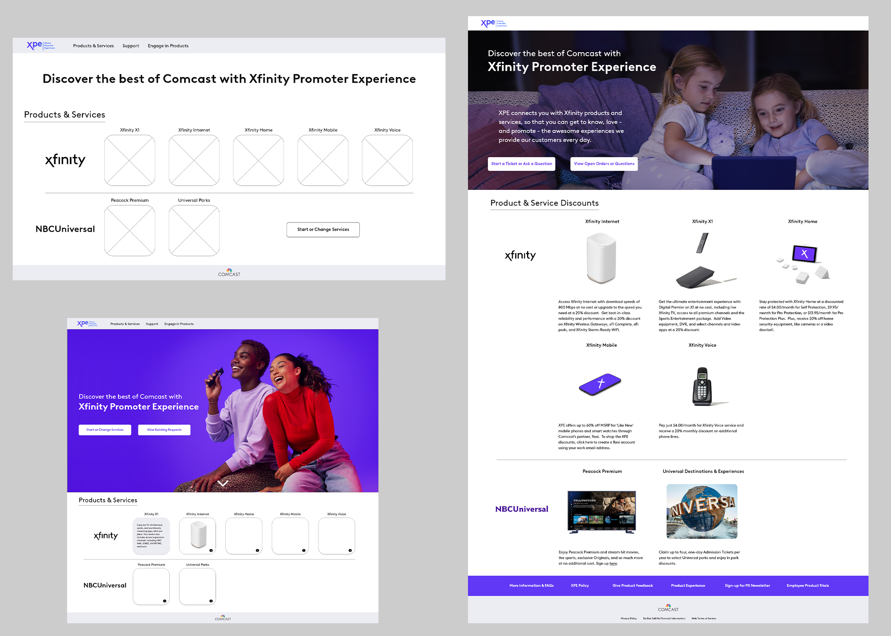
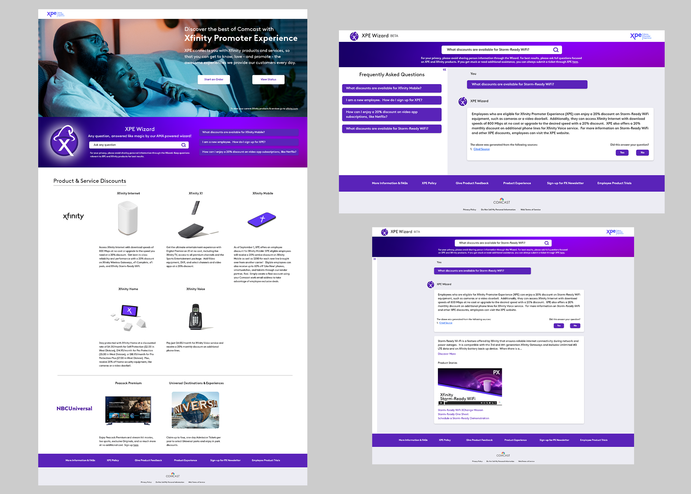

XPE Wizard
AI Knowledge Base Assistant


AI Knowledge Base Assistant
Workforce eXperience Technology team at Comcast
UX research, UI design, implementation of generative AI
Decreased Ticket Submission by 30% with the addition of Generative AI
This is a site for employees to add, change and manage their products and services provided by the company.
I was fortunate enough to do the initial redesign for this site. It went from a confusing experience to more of an ecommerce feel for selecting products and services and viewing additional information about them.
The redesign laid the groundwork for creating the enhanced experience of the generative AI XPE Wizard.
The new login page was designed to create a better layout for the space that didn’t push the most important info, the actual login, down the page. Incorporating updated brand imagery and colors created a more modern page and experience.

User feedback on the site was overwhelmingly negative when it came to navigation. As someone who used the old site when I was a new employee, I can confirm that the site was not user friendly.
The redesign of the landing page was the biggest improvement. Employees were given options that allowed them to start or change services, view existing requests or view additional information about all products and services that were being offered to them.
The business partners wanted the site to have more of an ecommerce feel, which is why I chose to use a grid layout to display product and service info. The initial iteration had tiles that when hovered over displayed information, but due to the large volume of text that had to be displayed, we ultimately went with the grid layout.

I designed instances of generative AI responses for several internal sites at Comcast. This particular instance broke the mold, in the best way possible, but still retained key re-usability aspects in the form of the displayed results, cited sources and feedback options.
I was able to layout the response page more like a chat feature. This was done with future iterations in mind as our generative AI grew and expanded to allow for a full chatbot experience.
Using Q&A pairs to determine accuracy, we worked to train the LLM to return results that were specific to cited sources and not its general knowledge. We also added a feature for certain products and services where additional information would populate in a separate response box below the answer to the question asked. For example, if you asked what discounts were available for Xfinity Home, the XPE Wizard would answer your question and then a video about home security would populate in what we called the Promoter box. This allowed the user to educate themselves further on the subject of their original query.

Reduced tickets by 30% improving employee satisfaction scores.